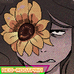

hey... something's missing!

sent by: june santos (a.k.a neo-rootpain), august 28, 2025, 03:11:31.
So. Some of you might be older fans, or even old partners of RootPain.com, and you likely noticed that
a few sections, and even a few Partners on the Partners Menu are missing! And you are probably
asking yourself; "What happened? What's happening? Is this permanent? Are they coming back?"
or you might even be asking "Why am I not there anymore?". Well, I'll make this one a bit
SIMPLEr and CLEANer than the first blog post, so bear with me for a second, will ya?
Let's start with a few things that are DEFINITELY making a comeback; the Downloads and Links section.
The reason why I didn't include them in the initial version of Neo-RootPain.com: Godspeed is because I'm still trying
to refine and redesign these sections, and as of now, I don't have a lot to include in them, or even to make them pop
in comparison to a lot of the other sections. So instead of delaying the website launch for another month or so
I'll just do what I did with the initial version of the original RootPain.com and release the website with a few sections
either unfinished or outright missing. However, I'll just not include them as of now.
But don't you worry. They are coming back for sure, and I have some cool ideas for the Links section, like adding stamps
and adding more websites for you to discover and to visit while you wait for me to update my own! In general, I want to
bring new stuff that wasn't in neither of the previous websites, and I think everyone will end up liking what
I have in store for the near future. I want to try and push the interactivity between contributors and visitors as far
as I can with this new iteration of the website, so people will always have something fun to look forward, and to even
outright participate in!
With all that being said, since we're talking about Links and Partners, we might aswell talk about the biggest
elephant in the room. A lot of the old partners and fanarts, including ones that were included as far as JuneSSai.net
was still a thing, are now gone. To make a story short; a lot has changed. I don't talk to a lot of these people any longer.
and some of them don't even have their websites up anymore, or are still reworking them.
A lot has changed since then, myself included, and I'm not sure if these people are still in good terms with me or if
they'd rather wash their hands and write everything off like nothing ever happened, so I'm giving everyone and easy way
out and just including the people that I know for a fact would like to be in here.
It's not all bad, some of the new contributors and partners are genuinely some of the greatest people I've met (Tom)
in recent memory, so I'd say nothing much has changed, specially since you can always just visit the older versions
of the previous websites through Neo-RootPain.com: Godspeed anyways. How? You'll have to find out.
Some fanarts and a few familiar faces are definitely coming back, but besides that, don't hold your breath.
However, if you want to partner up with me, or even if you were a previous contributor that still wishes to be included
in this new version of my website, please, email me at NeoRootPain@gmail.com, or reach me directly via my socials like
Newgrounds, Bluesky, or any other place you can find me on.
With that being said, I'm very happy with the way everything turned out.
There's more to come, and I hope to see you there with me along the way.
Peace out, suckers; it's been real. Godspeed.
working slightly harder
june santos (a.k.a neorootpain)